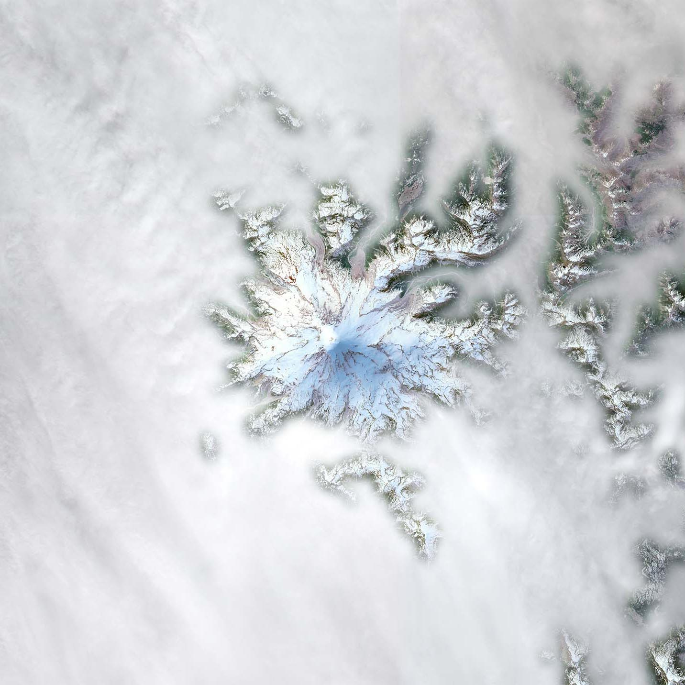
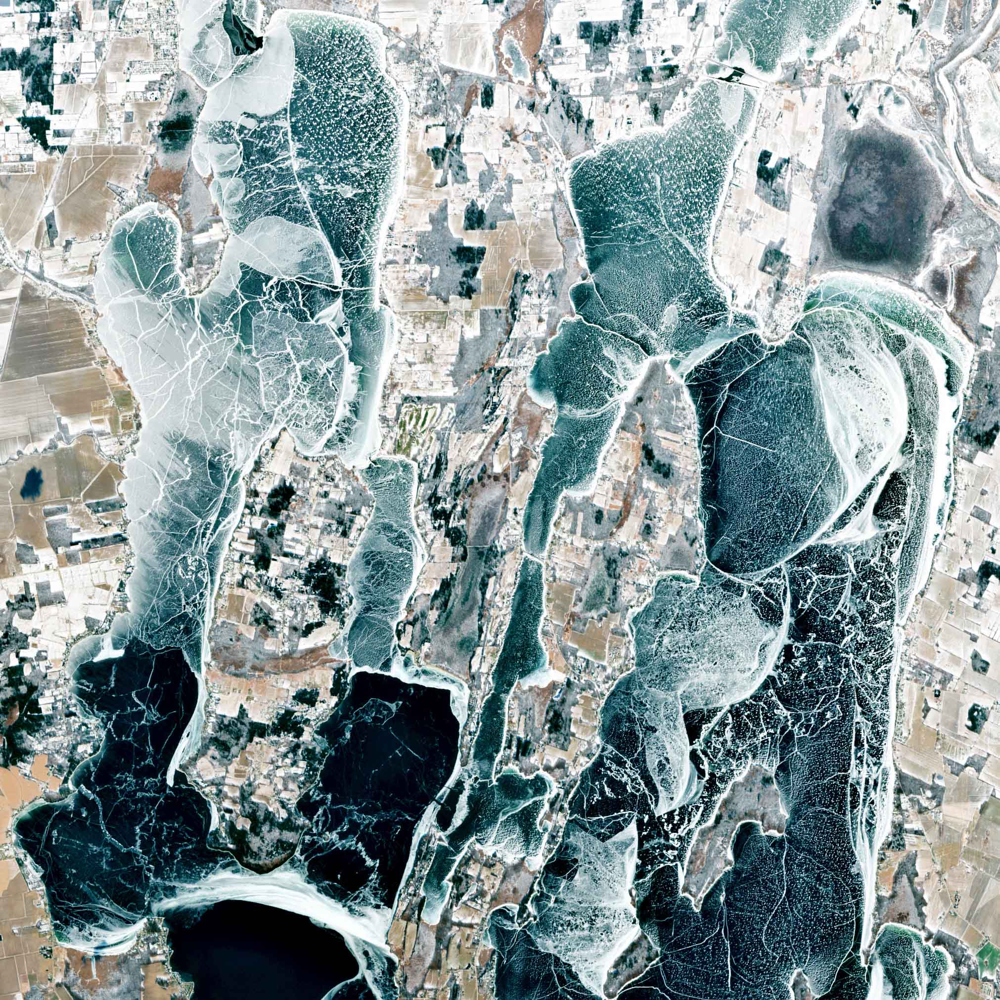

Cartography - Data Journalism - Design
I'm a cartographer and data journalist based in Burlington, VT. I design and develop visual stories, maps, and interactive graphics. My award-winning journalism has been published in The New York Times, NPR, and High Country News.
I've also worked with researchers and nonprofits including the Center for Community News, the Global Foodbanking Network, The Wilderness Society, and the School of Forest Resources at the University of Maine. I have a M.S. in Cartography & GIS from the University of Wisconsin–Madison and a B.A. in English & American Literature from Middlebury College.
I'm currently freelancing and open to work. You can reach me at nunderwood6@gmail.com.

